msuskadev
msuskadev Mieczysław Suska
Mieczysław Suska on_quiet_lanes
on_quiet_lanes



Managing projects by using blockchain and smart contracts
Different regulations
Lack of tools and expertise
Hiring is difficult
More complex test scenarios - broadcasting, wallets etc.
Lack of testing tools
Lack of expertise
Redefine business process
Audits
Different regulations and law
Intervention tool
Cloud infrastructure - BaaS
Virtual networks and network policies
Backup and restore - drain mode
Thank you